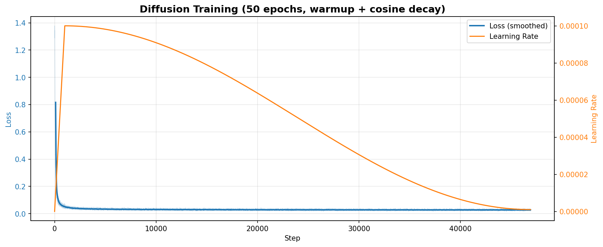
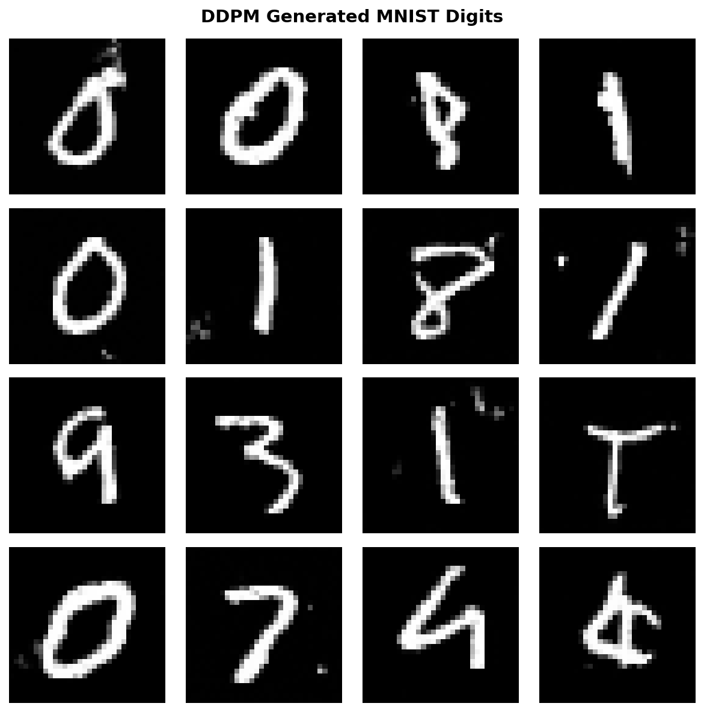

Training a Diffusion Model on MNIST¤
Level: Beginner | Runtime: ~30 minutes (GPU), ~2-3 hours (CPU) | Format: Python + Jupyter
This tutorial provides a complete, production-ready example of training a DDPM (Denoising Diffusion Probabilistic Model) on the MNIST dataset. By the end, you'll have trained a diffusion model from scratch that generates realistic handwritten digits.
Files¤
- Python Script:
examples/generative_models/image/diffusion/diffusion_mnist_training.py - Jupyter Notebook:
examples/generative_models/image/diffusion/diffusion_mnist_training.ipynb
Dual-Format Implementation
This example is available in two synchronized formats:
- Python Script (.py) - For version control, IDE development, and CI/CD integration
- Jupyter Notebook (.ipynb) - For interactive learning, experimentation, and exploration
Both formats contain identical content and can be used interchangeably.
Quick Start¤
# Activate Artifex environment
source activate.sh
# Run the Python script
python examples/generative_models/image/diffusion/diffusion_mnist_training.py
# Or launch Jupyter notebook for interactive exploration
jupyter lab examples/generative_models/image/diffusion/diffusion_mnist_training.ipynb
Overview¤
Learning Objectives:
- Understand why certain training techniques matter for diffusion models
- Load and preprocess MNIST dataset with proper padding for UNet
- Configure a DDPM model with cosine noise schedule and Huber loss
- Implement learning rate warmup with cosine decay
- Train using Artifex's DiffusionTrainer framework
- Generate samples using DDIM (fast) sampling
- Troubleshoot common training issues
Prerequisites:
- Basic understanding of neural networks and diffusion models
- Familiarity with JAX and Flax NNX basics
- Artifex installed with CUDA support (recommended)
Estimated Time: 30-45 minutes
What's Covered¤
-
Data Pipeline
Loading MNIST, padding to 32x32, normalizing to [-1, 1] range
-
Model Configuration
DDPM with cosine noise schedule, Huber loss, optimized UNet
-
Training Optimization
Learning rate warmup + cosine decay to prevent early plateau
-
Training Loop
Using DiffusionTrainer with JIT compilation and EMA updates
-
Sample Generation
DDIM sampling (100 steps) for fast, high-quality generation
-
Visualization
Training curves with loss and learning rate monitoring
Expected Results¤
After 50 epochs of training:
- Training time: ~30 minutes on GPU (RTX 4090)
- Final loss: ~0.027 (benchmark: 0.021 for quality digits)
- Generated samples: Clear, readable handwritten digits


Why These Techniques Matter¤
Before diving into the code, let's understand why we use specific techniques:
| Technique | Problem it Solves | Our Solution |
|---|---|---|
| Cosine noise schedule | Linear schedule adds noise too quickly in early steps | Cosine provides smoother noise progression |
| Huber loss | MSE loss can be unstable with outliers | Huber is more robust, combines L1 and L2 |
| LR warmup | High learning rate causes early training instability | Start at 0, gradually increase to peak |
| Cosine LR decay | Constant LR leads to oscillation near optimum | Smoothly decrease LR for fine-tuning |
| 32x32 padding | 28x28 doesn't divide evenly for UNet | 32→16→8→4 gives clean downsampling |
| Uniform timestep sampling | Biased sampling can hurt training stability | Equal probability for all timesteps |
Prerequisites¤
Installation¤
GPU Memory Configuration¤
Important: Memory Configuration
TensorFlow (used by tensorflow_datasets) can pre-allocate GPU memory, leaving none for JAX. Set these environment variables before any imports:
import os
os.environ["TF_CPP_MIN_LOG_LEVEL"] = "2" # Suppress TF warnings
os.environ["TF_FORCE_GPU_ALLOW_GROWTH"] = "true" # Don't pre-allocate
os.environ["XLA_PYTHON_CLIENT_PREALLOCATE"] = "false" # JAX: don't pre-allocate
os.environ["XLA_PYTHON_CLIENT_MEM_FRACTION"] = "0.8" # JAX: use 80% of GPU
Step 1: Setup and Imports¤
import jax
import jax.numpy as jnp
import matplotlib.pyplot as plt
import numpy as np
import optax
from flax import nnx
from tqdm import tqdm
# Artifex imports
from artifex.generative_models.core.configuration.backbone_config import UNetBackboneConfig
from artifex.generative_models.core.configuration.diffusion_config import (
DDPMConfig,
NoiseScheduleConfig,
)
from artifex.generative_models.core.noise_schedule import create_noise_schedule
from artifex.generative_models.models.diffusion.ddpm import DDPMModel
from artifex.generative_models.training.trainers.diffusion_trainer import (
DiffusionTrainer,
DiffusionTrainingConfig,
)
# DataRax imports for data loading
from datarax import from_source
from datarax.sources import TFDSSource, TfdsDataSourceConfig
print(f"JAX backend: {jax.default_backend()}")
print(f"Devices: {jax.devices()}")
Step 2: Configuration¤
We define our training hyperparameters based on research best practices:
# Training configuration
SEED = 42
NUM_EPOCHS = 50 # 40-100 epochs needed for quality results
BATCH_SIZE = 256 # Larger batch for better GPU utilization
NUM_TIMESTEPS = 1000 # Standard for DDPM
IMAGE_SIZE = 32 # Pad MNIST 28x28 → 32x32 for clean UNet downsampling
# Learning rate schedule
BASE_LR = 1e-4 # Peak learning rate (after warmup)
WARMUP_STEPS = 500 # ~2 epochs of warmup
Why these values?
- 50 epochs: Diffusion models need sufficient training time. 10 epochs often results in blurry samples.
- Batch size 256: Larger batches provide better GPU utilization and faster training.
- 1000 timesteps: Standard from the original DDPM paper, provides good quality-speed tradeoff.
- 32x32 images: Enables clean UNet downsampling (32→16→8→4) without odd dimensions.
Step 3: Data Loading and Preprocessing¤
We use DataRax for efficient data loading with built-in batching and shuffling.
Create MNIST Data Source¤
# Initialize RNG for data loading
data_rngs = nnx.Rngs(SEED)
# Configure MNIST data source using DataRax
train_source_config = TfdsDataSourceConfig(
name="mnist",
split="train",
shuffle=True, # Shuffle training data
shuffle_buffer_size=10000, # Buffer size for shuffling
)
train_source = TFDSSource(train_source_config, rngs=data_rngs)
print(f"📊 MNIST train dataset loaded: {len(train_source)} samples")
DataRax Benefits:
- Automatic TF→JAX conversion: No manual array conversion needed
- Built-in shuffling: Configurable shuffle buffer
- Memory efficient: Streams data instead of loading all at once
- JAX-native: Seamless integration with JAX workflows
Create Training Pipeline¤
DataRax's from_source function creates a batched data pipeline:
# Create training pipeline with batching and JIT compilation
train_pipeline = from_source(train_source, batch_size=BATCH_SIZE, jit_compile=True)
# Calculate number of batches per epoch
n_batches = len(train_source) // BATCH_SIZE
print(f"✅ Training pipeline created: {n_batches} batches per epoch")
Define Preprocessing Function¤
Diffusion models expect data in the range [-1, 1]. We also pad 28x28 → 32x32 for clean UNet downsampling:
def preprocess_batch(batch):
"""Preprocess MNIST batch for diffusion training.
Args:
batch: Dictionary with 'image' key (uint8, shape: [B, 28, 28, 1])
Returns:
Dictionary with normalized and padded images (float32, shape: [B, 32, 32, 1])
"""
image = batch["image"]
# Convert to float and normalize to [-1, 1]
image = image.astype(jnp.float32)
image = (image / 127.5) - 1.0
# Pad 28x28 to 32x32 (2 pixels on each side)
# This enables clean UNet downsampling: 32 -> 16 -> 8 -> 4
image = jnp.pad(
image,
((0, 0), (2, 2), (2, 2), (0, 0)), # Batch, height, width, channels
mode="constant",
constant_values=-1.0, # Background value after normalization
)
return {"image": image}
Iterate Over Data¤
The pipeline yields batches as dictionaries with JAX arrays:
# Example: inspect first batch
for raw_batch in train_pipeline:
batch = preprocess_batch(raw_batch)
images = batch["image"] # Shape: (BATCH_SIZE, 32, 32, 1)
print(f" Batch shape: {images.shape}")
print(f" Value range: [{float(images.min()):.2f}, {float(images.max()):.2f}]")
break # Just check first batch
Output:
DataRax Pipeline Features
The DataRax pipeline automatically handles:
- Batching: Groups samples into batches of
BATCH_SIZE - Shuffling: Randomizes order each epoch (configured in source)
- JAX Arrays: Returns JAX arrays ready for training
- Streaming: Memory-efficient iteration over large datasets
Step 4: Model Configuration¤
Initialize Random Number Generators¤
key = jax.random.key(SEED)
params_key, noise_key, sample_key, dropout_key, timestep_key = jax.random.split(key, 5)
rngs = nnx.Rngs(
params=params_key,
noise=noise_key,
sample=sample_key,
dropout=dropout_key,
timestep=timestep_key,
)
Configure UNet Backbone¤
The UNet is the neural network that learns to predict noise:
backbone_config = UNetBackboneConfig(
name="unet_backbone",
hidden_dims=(64, 128, 256), # Channel progression at each resolution
activation="gelu", # GELU activation (smoother than ReLU)
in_channels=1, # MNIST is grayscale
out_channels=1,
time_embedding_dim=128, # Dimension for timestep encoding
attention_resolutions=(8,), # Apply attention at 8x8 resolution only
num_res_blocks=2, # Residual blocks per resolution
channel_mult=(1, 2, 4), # Channel multipliers
dropout_rate=0.0, # No dropout for this example
)
Configure Noise Schedule¤
We use a cosine schedule instead of linear for smoother training:
noise_schedule_config = NoiseScheduleConfig(
name="cosine_schedule",
schedule_type="cosine", # Key improvement: cosine > linear
num_timesteps=NUM_TIMESTEPS,
beta_start=1e-4,
beta_end=0.02,
)
Why cosine? The linear schedule adds noise too aggressively in early timesteps, making it harder for the model to learn. Cosine provides a gentler progression.
Configure DDPM Model¤
ddpm_config = DDPMConfig(
name="ddpm_mnist",
backbone=backbone_config,
noise_schedule=noise_schedule_config,
input_shape=(IMAGE_SIZE, IMAGE_SIZE, 1), # 32x32 grayscale
loss_type="huber", # Key improvement: Huber > MSE for stability
clip_denoised=True,
)
# Create the model
model = DDPMModel(ddpm_config, rngs=rngs)
print("✅ DDPMModel created:")
print(f" UNet: hidden_dims={backbone_config.hidden_dims}")
print(f" Noise schedule: {noise_schedule_config.schedule_type}")
print(f" Loss type: {ddpm_config.loss_type}")
Step 5: Training Setup¤
Learning Rate Schedule¤
The warmup + cosine decay schedule is critical for stable training:
# Create noise schedule for trainer
noise_schedule = create_noise_schedule(noise_schedule_config)
# Calculate total training steps (n_batches defined in Step 3)
total_steps = NUM_EPOCHS * n_batches
print(f"Total training steps: {total_steps}")
# Learning rate schedule: warmup then cosine decay
lr_schedule = optax.warmup_cosine_decay_schedule(
init_value=0.0, # Start at 0
peak_value=BASE_LR, # Ramp up to 1e-4
warmup_steps=WARMUP_STEPS, # Over 1000 steps
decay_steps=total_steps, # Then decay over remaining training
end_value=BASE_LR * 0.01, # End at 1% of peak
)
Why warmup? Without warmup, large gradients in early training can destabilize the model, causing the loss to plateau prematurely.
Create Optimizer¤
optimizer = nnx.Optimizer(
model,
optax.chain(
optax.clip_by_global_norm(1.0), # Gradient clipping for stability
optax.adamw(lr_schedule, weight_decay=1e-5), # AdamW with weight decay
),
wrt=nnx.Param,
)
print(f"✅ Optimizer: AdamW with warmup ({WARMUP_STEPS} steps) + cosine decay")
Configure DiffusionTrainer¤
diffusion_config = DiffusionTrainingConfig(
prediction_type="epsilon", # Predict the noise (classic DDPM)
timestep_sampling="uniform", # Sample timesteps uniformly
loss_weighting="uniform", # Equal weight for all timesteps
ema_decay=0.9999, # Exponential moving average
ema_update_every=10, # Update EMA every 10 steps
)
trainer = DiffusionTrainer(noise_schedule, diffusion_config)
# JIT-compile the training step for speed
jit_train_step = nnx.jit(trainer.train_step)
print("✅ DiffusionTrainer initialized")
print(f" Prediction type: {diffusion_config.prediction_type}")
print(f" Timestep sampling: {diffusion_config.timestep_sampling}")
Step 6: Training Loop¤
Now we train the model, tracking both loss and learning rate:
history = {"step": [], "loss": [], "epoch": [], "lr": []}
train_key = jax.random.key(999)
global_step = 0
print(f"\nTraining for {NUM_EPOCHS} epochs ({total_steps} steps)...")
print("-" * 60)
for epoch in range(NUM_EPOCHS):
epoch_losses = []
# DataRax pipeline automatically handles batching and shuffling
pbar = tqdm(train_pipeline, desc=f"Epoch {epoch+1}/{NUM_EPOCHS}", total=n_batches)
for raw_batch in pbar:
train_key, step_key = jax.random.split(train_key)
# Preprocess batch (normalize and pad)
batch = preprocess_batch(raw_batch)
# Training step (JIT-compiled)
loss, metrics = jit_train_step(model, optimizer, batch, step_key)
# Update EMA weights
if global_step % diffusion_config.ema_update_every == 0:
trainer.update_ema(model)
# Track metrics
current_lr = float(lr_schedule(global_step))
epoch_losses.append(float(loss))
history["step"].append(global_step)
history["loss"].append(float(loss))
history["epoch"].append(epoch)
history["lr"].append(current_lr)
global_step += 1
pbar.set_postfix({"loss": f"{loss:.4f}", "lr": f"{current_lr:.2e}"})
avg_loss = np.mean(epoch_losses)
print(f"Epoch {epoch+1}/{NUM_EPOCHS}: avg_loss = {avg_loss:.4f}")
print("-" * 60)
print("Training complete!")
What to expect during training:
- Epoch 1-2: Loss drops rapidly (warmup phase)
- Epoch 3-20: Steady decrease as model learns
- Epoch 20-50: Gradual improvement with decaying LR
- Final loss: ~0.027 (close to benchmark 0.021)
Step 7: Generate Samples¤
After training, generate samples using DDIM for fast, high-quality results:
print("\nGenerating samples...")
n_samples = 16
# DDIM is 10-20x faster than DDPM with comparable quality
samples = model.sample(
n_samples_or_shape=n_samples,
scheduler="ddim",
steps=100, # 100 steps (vs 1000 for DDPM)
)
print(f"✅ Generated {n_samples} samples")
Visualize Results¤
def visualize_samples(images, title="Samples", n_cols=4):
"""Visualize a grid of generated images."""
n_images = len(images)
n_rows = (n_images + n_cols - 1) // n_cols
fig, axes = plt.subplots(n_rows, n_cols, figsize=(n_cols * 2, n_rows * 2))
axes = axes.flatten()
for i, (ax, img) in enumerate(zip(axes, images)):
# Denormalize from [-1, 1] to [0, 1]
img = (np.array(img) + 1.0) / 2.0
img = np.clip(img, 0, 1)
ax.imshow(img.squeeze(), cmap="gray")
ax.axis("off")
for i in range(n_images, len(axes)):
axes[i].axis("off")
plt.suptitle(title, fontsize=14, fontweight="bold")
plt.tight_layout()
plt.show()
visualize_samples(samples, title="DDPM Generated MNIST Digits")
Step 8: Plot Training Curve¤
Visualize training progress with both loss and learning rate:
fig, ax1 = plt.subplots(figsize=(12, 5))
# Loss curve (left axis)
ax1.plot(history["step"], history["loss"], alpha=0.3, linewidth=0.5, color="tab:blue")
if len(history["loss"]) > 100:
window = 100
smoothed = np.convolve(history["loss"], np.ones(window) / window, mode="valid")
ax1.plot(history["step"][window-1:], smoothed, linewidth=2,
label="Loss (smoothed)", color="tab:blue")
ax1.set_xlabel("Step")
ax1.set_ylabel("Loss", color="tab:blue")
ax1.grid(True, alpha=0.3)
# Learning rate curve (right axis)
ax2 = ax1.twinx()
ax2.plot(history["step"], history["lr"], linewidth=1.5, color="tab:orange",
label="Learning Rate")
ax2.set_ylabel("Learning Rate", color="tab:orange")
# Legend
lines1, labels1 = ax1.get_legend_handles_labels()
lines2, labels2 = ax2.get_legend_handles_labels()
ax1.legend(lines1 + lines2, labels1 + labels2, loc="upper right")
ax1.set_title("Diffusion Training (warmup + cosine decay)")
plt.tight_layout()
plt.show()
Experiments to Try¤
Once you have the basic training working, try these experiments:
1. Different Noise Schedules¤
Compare cosine vs linear noise schedules:
# Linear schedule (original DDPM)
noise_schedule_config = NoiseScheduleConfig(
name="linear_schedule",
schedule_type="linear", # Change from cosine
num_timesteps=1000,
beta_start=1e-4,
beta_end=0.02,
)
Expected Result: Linear schedule typically produces slightly worse samples with the same training time.
2. Adjust Model Capacity¤
Try a larger model for better quality (if GPU memory allows):
# Larger UNet for higher quality
backbone_config = UNetBackboneConfig(
name="unet_large",
hidden_dims=(128, 256, 512), # Larger channels
attention_resolutions=(8, 16), # Attention at multiple resolutions
num_res_blocks=3, # More residual blocks
channel_mult=(1, 2, 4),
)
Trade-off: Better quality but slower training and higher memory usage.
3. Different Sampling Methods¤
Compare DDPM vs DDIM sampling:
# DDPM sampling (slow but original algorithm)
samples_ddpm = model.sample(
n_samples_or_shape=16,
scheduler="ddpm", # 1000 steps
)
# DDIM sampling (fast with comparable quality)
samples_ddim = model.sample(
n_samples_or_shape=16,
scheduler="ddim",
steps=50, # Try 50, 100, 200
)
Expected Result: DDIM with 50-100 steps is 10-20x faster with minimal quality loss.
4. Loss Function Comparison¤
Try MSE loss instead of Huber:
ddpm_config = DDPMConfig(
name="ddpm_mse",
backbone=backbone_config,
noise_schedule=noise_schedule_config,
input_shape=(32, 32, 1),
loss_type="mse", # Instead of "huber"
clip_denoised=True,
)
Expected Result: MSE may be less stable but can work well with careful tuning.
5. Extend to Other Datasets¤
Apply the same techniques to Fashion-MNIST:
# Load Fashion-MNIST instead
ds_train = tfds.load("fashion_mnist", split="train", as_supervised=True)
# Rest of the code remains the same!
Troubleshooting¤
Issue 1: GPU Out of Memory¤
Symptoms: RuntimeError: CUDA out of memory or TensorFlow allocation errors
Solutions:
# 1. Set environment variables BEFORE imports
import os
os.environ["TF_FORCE_GPU_ALLOW_GROWTH"] = "true"
os.environ["XLA_PYTHON_CLIENT_PREALLOCATE"] = "false"
os.environ["XLA_PYTHON_CLIENT_MEM_FRACTION"] = "0.8"
# 2. Reduce batch size
BATCH_SIZE = 32 # or 16
# 3. Use smaller model
hidden_dims = (32, 64, 128) # instead of (64, 128, 256)
Issue 2: Loss Plateaus Early¤
Symptoms: Loss drops to ~0.03 in first 2 epochs and stops improving
Causes & Solutions:
- Missing warmup: Add learning rate warmup (critical!)
- Linear noise schedule: Switch to cosine schedule
- Too few epochs: Train for 50+ epochs, not 10
Issue 3: Blurry or Noisy Samples¤
Solutions:
- Train longer: 50-100 epochs for quality results
- Use cosine noise schedule: Smoother than linear
- Increase DDIM steps: Try
steps=100orsteps=200 - Check final loss: Should be ~0.02-0.03 for good samples
Issue 4: Training is Slow¤
Solutions:
# Ensure JIT compilation is working
jit_train_step = nnx.jit(trainer.train_step)
# Check GPU is being used
print(jax.default_backend()) # Should print "gpu"
# First epoch is slow (JIT compilation), subsequent epochs should be fast
Summary¤
In this tutorial, you learned:
- Why padding matters: 32x32 enables clean UNet downsampling
- Why cosine schedule: Smoother noise progression than linear
- Why Huber loss: More robust than MSE
- Why warmup: Prevents early training instability
- How to use DiffusionTrainer: Artifex's training framework with SOTA techniques
- How to generate samples: DDIM for 10-20x faster sampling
Key Takeaways¤
| What | Why | How |
|---|---|---|
| Pad to 32x32 | Clean UNet downsampling | np.pad(..., constant_values=-1.0) |
| Cosine schedule | Smoother training | schedule_type="cosine" |
| Huber loss | Stable gradients | loss_type="huber" |
| LR warmup | Prevent early plateau | warmup_cosine_decay_schedule |
| DDIM sampling | Fast generation | scheduler="ddim", steps=100 |
Next Steps¤
Related Examples¤
-
Compare diffusion with Variational Autoencoders
-
Learn adversarial training for image generation
-
Explore normalizing flows with exact likelihoods
-
Quick API demo without training
Further Exploration¤
- Conditional Generation: Add class labels to control digit generation
- Fashion-MNIST: Apply the same techniques to clothing items
- CIFAR-10: Scale up to 32x32 color images (change
in_channels=3) - Advanced Techniques: Try v-prediction or min-SNR loss weighting
Additional Resources¤
-
Comprehensive guide to diffusion models in Artifex
-
Complete API documentation for DDPMModel
-
Original paper by Ho et al., 2020
-
HuggingFace's excellent tutorial
-
Fast sampling by Song et al., 2020
Congratulations! You've successfully trained a diffusion model that generates realistic handwritten digits!